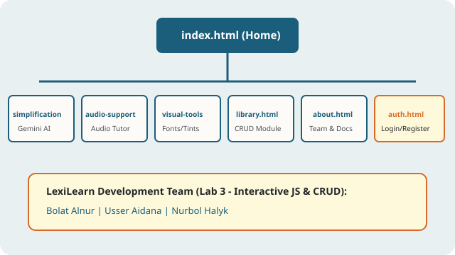

About LexiLearn: Project Mission, Sitemap & Team Log
Our Mission & Lab 3 Architecture Overview
LexiLearn (`ILP-0.03`) expands our accessible learning platform to 7 interconnected HTML pages powered by custom CSS (`css/style.css`) and modular vanilla JavaScript (`js/auth.js` and `js/library.js`). This release introduces live form validation, exact age verification, password security policies, and a persistent LocalStorage CRUD module for study materials.
All architectural decisions follow the cognitive accessibility research published by the W3C Web Content Accessibility Guidelines (WCAG) and the International Dyslexia Association.

Complete 7-Page Sitemap & User Actions
Every page in LexiLearn shares a consistent header, 7-link primary navigation bar, reading comfort strip, and attribution footer:
- 1. index.html (Homepage & Overview): Hero banner with CTA buttons, 4 core feature cards, dyslexia accessibility split panel, and a fully labeled course adaptation request form.
- 2. simplification.html (AI Text Simplification): Conceptual interface preview powered by Google Gemini (`gemini-2.5-flash`), side-by-side before/after biology textbook transformation, and 4-stage linguistic workflow.
- 3. audio-support.html (AI Audio Explanations): Conversational AI Audio Tutor console, playback controls, and synchronized sentence-level transcript highlighting.
- 4. visual-tools.html (Visual Reading Tools): Calibrated paper tint swatches (`#FDFBF7`, `#FFF9DB`, `#EBF5FB`, `#EAFAF1`) and 5 core dyslexia typography rules.
- 5. library.html (Adapted Study Library — Interactive CRUD): Full Create, Read, Update, and Delete catalog powered by `js/library.js` and `localStorage` with live search, status filter, reading-level filter, and conditional card badges.
- 6. about.html (About & Team Contribution Log): Project mission, visual 7-page site architecture map, team responsibilities, and project documentation.
- 7. auth.html (Registration & Sign In): Live field-level validated registration and login forms powered by `js/auth.js` with age >= 13 verification and safe non-sensitive profile storage.
Team Contribution Log (Lab 3 — `ILP-0.03`)
Work across the 7 HTML pages, shared stylesheet (`css/style.css`), vanilla JavaScript modules (`js/auth.js`, `js/library.js`), and `PROJECT_DOCS.md` was divided equally among our three team members:
| Team Member | Assigned Pages & JS/CSS Modules | Completed Work in Lab 3 (`ILP-0.03`) |
|---|---|---|
| Bolat Alnur | index.html, about.html, auth.html, js/auth.js |
Created the `auth.html` registration and login layout, implemented live field validation (`input`, `change`, `blur`, `submit`), exact birthday age >= 13 calculation, and updated the 7-page navigation bar. |
| Usser Aidana | simplification.html, visual-tools.html, js/auth.js (password policy & storage), css/style.css |
Implemented regex email and password strength checks (8+ chars, uppercase, lowercase, digit), enforced zero plain-text password storage in `localStorage` via `try/catch`, and styled validation states in `css/style.css`. |
| Nurbol Halyk | library.html, audio-support.html, js/library.js |
Engineered the persistent Study Library CRUD module (`loadItems`, `saveItems`, `validateItem`, `renderItems`, `addItem`, `editItem`, `updateItem`, `deleteItem`), live search/filter controls, and conditional UI card badges. |